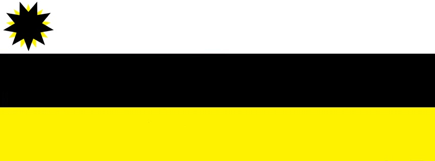

Símbolos
Este é o parágrafo introdutório da matéria.
A bandeira do Nordeste Independente é apresentada pelo movimento para representar as suas ações e legitimar a construção da identidade nordestina por meio das suas cores características, do seu significado específico e da sua causa de autodeterminação. Foi concebida a partir de estudos prévios de bandeiras nacionais e estaduais, levando em consideração a história e as peculiaridades culturais da região Nordeste.
A bandeira é constituída, de cima para baixo, por três faixas horizontais nas cores branca, preta e dourada, e duas estrelas intercaladas de nove pontas nas cores preta e dourada posicionadas no canto superior esquerdo. Foi idealizada exclusivamente para representar o movimento, havendo a possibilidade, em discussões futuras, de adaptá-la à nova nação ou formular uma nova bandeira por meio de deliberação popular.
Branco - A porção branca da bandeira representa a paz do território nordestino e a pureza de seu povo;
Preto - A porção preta da bandeira representa o obscuro período de neocolonialismo interno ao qual a região Nordeste está submetida dentro da República Federativa do Brasil;

Estrela - A estrela amarela representa a região Nordeste, enquanto a estrela preta representa o pacto federativo brasileiro. A estrela preta posiciona-se à frente da estrela dourada com o intuito de impedir que seu brilho se evidencie; no entanto, a última continua visualmente perceptível. Trata-se de uma mensagem oculta que denuncia o sistema neocolonial ao qual os nove estados nordestinos estão submetidos; um sistema neocolonial que impede seu desenvolvimento adequado. As nove pontas representam os nove estados nordestinos.